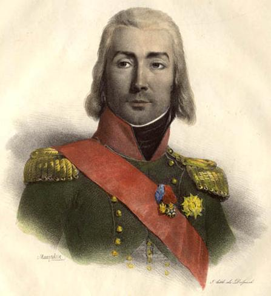
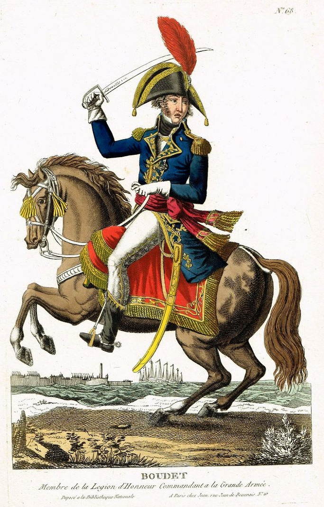

아스페른-에슬링 5편 - 한밤의 멱살잡이
게시: 2017-03-05T18:45:34+09:00
프랑스군이 처음으로 도나우 강 좌안에 발을 내딛은 5월 20일 밤, 오스트리아군의 거센 저항이 있을까 두려워하던 프랑스 지휘관들은 의외로 조용한 주변의 동정에 다소 놀랐고, 일단 안심하면서도 불안했습니다. 기병대를 이끌고 주변을 한바퀴 돌았던 베시에르는 주변에 적은 없다는 입장이었습니다. 란은 오스트리아군이 후퇴하면서 아마 1개 사단 정도의 병력을 후위대로 남겨 놓았을 것이라고 주장했습니다. 앞서 언급한 것처럼, 한밤중에 아스페른 교회 종탑까지 직접 올라가 주변을 둘러보았으나 적의 존재는 감지할 수가 없었던 마세나는 그럼에도 불구하고 적은 머지 않은 곳에 있을 것이라고 생각했습니다.
최고위급 지휘관 3명의 의견이 제각각이었으므로, 이들은 21일 새벽 2시 일단 로바우 섬으로 되돌아갔습니다. 나폴레옹이 거기 있었기 때문이었지요. 그들은 모두 기분이 좋지 않았습니다. 하긴 당장 몇 시간 후면 오스트리아군과 혈투를 벌여야 할 수도 있는데, 그 새벽 늦게까지 잠도 못 잤을 뿐만 아니라 아직도 뭐가 어떻게 돌아가는지 제대로 파악도 못 했으니 그럴 법도 했습니다. 그 중에서도 란은 매우 기분이 좋지 않았습니다.

(장 밥티스트 베시에르입니다. 그는 당시 이미 구식 패션으로 치부되던 '흰 가루를 뿌린 긴 장발'을 고집할 정도로 귀족적인 외모를 고집하던 인물이었습니다. 그러나 알고보면 그는 평민 출신에 하사관으로 군 생활을 시작한 사람이었고, 비록 란처럼 가스코뉴까지는 아니어도 그 근처 남부 프랑스 출신이었습니다. 덕분에 처음에는 란과 꽤 친한 사이였습니다.)
나폴레옹의 시종장이었던 콩스탕(Constant)에 따르면, 이때 작은 난동이 있었습니다. 나폴레옹 앞에서 이 세 원수들이 서로 자기 짐작이 옳을 것이라고 티격태격했는데, 결론이 날 수 없는 이 입씨름에 짜증이 났던 란은 나폴레옹과 직접 이야기하겠다고 마세나와 베시에르를 버려두고 나폴레옹 쪽으로 성큼 다가가려 했습니다. 그때 베시에르가 거의 반사적으로 란과 나폴레옹 사이를 가로 막았습니다. 황제 폐하께 불손하다는 것이었지요. 당시 나폴레옹은 외모와 옷차림도 근사하고 자신에게 깍듯이 대하던 아부꾼 베시에르를 가까이 하고 있었습니다. 덕분에 1807년 러시아 짜르와 만나던 틸지트(Tilsit) 회담 때도 란 대신 베시에르를 데려갈 정도였지요. 란이나 베시에르나 둘다 자신이 나폴레옹에게 특별한 존재라고 생각하고 있었으므로, 이 두 사람의 충돌은 시간의 문제였을 뿐 필연적인 것이었습니다.
나폴레옹과 이야기하려는 자신의 앞을 가로막다니 ! 이걸 참고 넘길 란이 아니었습니다. 그는 대뜸 베시에르의 멱살을 쥐고 이리저리 흔들며 소리를 질렀습니다.
"꺼져 ! 폐하께서는 너 따위의 호위는 필요 없으시다 ! 아주 희한하네 ? 전투 현장에서는 코빼기도 볼 수 없더니 폐하를 뵈려하니까 떡 나타나니 말이야 !"
군인에게 있어 최대의 모욕은 싸움을 회피하는 겁장이라는 비난이었습니다. 그런데 그것도 나폴레옹 면전에서 그런 비난을 당하다니 ! 베시에르는 란에게 멱살이 잡힌 채로 당황스럽기도 하고 화도 나서 얼굴이 하얗게 질렸지만, 감히 나폴레옹 앞에서 란과 주먹다짐을 하지는 않았습니다. 재빨리 나폴레옹이 끼어들어 직접 란의 손목을 꽉 잡으며 말렸습니다. 만약 나폴레옹이 "이게 무슨 짓인가, 란 원수"라고 했다면 어땠을지 모르겠으나, 영리한 그는 "진정하게, 장"이라며 부드럽게 말렸기에 란도 베시에르를 내팽개치고 일단 싸움을 그쳤습니다. 물론 베시에르는 혼자 밤새도록 란에게 욕설을 퍼부으며 분을 삭여야 했습니다. 그러나 이것은 결코 란과 베시에르의 마지막 충돌은 아니었습니다.

(5월 21일 아침의 상황입니다. 당시 로바우 섬에서 도나우 강 좌안으로 이어진 부교는 아스페른과 에슬링 사이에 딱 1개 있었습니다.)
그 소동이 있은 뒤에도 마세나가 밤새도록 병력을 이동시켰지만, 몇 시간 뒤인 21일 새벽에 도나우 강 좌안으로 건너온 프랑스군은 마세나의 제4 군단 뿐이었습니다. 워낙 병력이 적었으므로 일단 나폴레옹은 부교 좌우 쪽으로 1.6km 정도씩 떨어진 아스페른(Aspern)과 에슬링(Essling) 두 마을을 점거하고 더 많은 병력이 넘어올 때까지 버티기로 합니다. 아스페른과 에슬링은 둘다 농가 백여채 정도가 있는 매우 작은 마을이어서, 사실 대단한 방어거점이 되기에는 부족한 점이 많았습니다. 방어 거점으로 쓸만 한 것은 아스페른에 있던 교회와 그에 딸린 돌담으로 둘러싸인 묘지, 그리고 에슬링에 있던 돌로 지은 큼직한 곡물 창고 정도였습니다.
나폴레옹은 아스페른을 모루로 삼고 에슬링으로부터 공격의 쐐기를 박아넣을 생각이었으므로, 마세나로 하여금 부대 대부분을 이끌고 아스페른을 지키도록 하고 란은 에슬링에 자리를 잡게 했습니다. 그나마 아직 란의 제2 군단은 아직 도나우강 우안에 있었으므로, 일단 마세나 휘하에 있던 부데(Boudet) 장군의 1개 사단을 란에게 빌려주고, 그 병력만으로 에슬링을 지키게 했습니다.

(Jean Boudet 장군입니다. 그는 나폴레옹과 동갑으로서, 혁명 발발 이전에 어린 나이에 소위부터 군생활을 시작했습니다.그는 방데 지방에서의 반란 진압 뿐만 아니라, 황열병으로 인해 모두가 꺼리는 카리브해 식민섬에서의 작전 등 험하고 그다지 영광스럽지 못한 임무를 잘 수행해낸 착실한 사람이었습니다. 그는 마렝고 전투가 있던 1800년 제2차 이탈리아 원정 때부터 나폴레옹 바로 밑에서 싸웠는데, 그의 가장 빛나는 전공은 바로 이 아스페른-에슬링 전투였습니다. 그러나 그렇게 열심히 싸웠던 그도 냉정한 나폴레옹 밑에서는 비참한 최후를 맞아야 했습니다.)
상황이 이렇다보니, 나폴레옹과의 전설에 남을 대회전을 꿈꾸며 마르쉐펠트(Marchfeld) 평원으로 전군을 이끌고 나왔던 카알 대공을 기다리던 것은 그저 텅 빈 평원이었습니다. 프랑스군이 지금쯤은 다 건너와 결전 준비가 되었으리라 생각했던 카알 대공은 당황했습니다. 척후들로부터 '병력의 규모는 알 수 없으나 프랑스군은 아스페른과 에슬링 두 마을을 점거한 채 웅크리고 있다' 라는 보고를 받은 카알 대공은 혀를 찼습니다. 그렇게 마을 건물 등 복잡한 방어물을 끼고 싸우는 것은, 대부분이 신규로 편성된 연대로 구성되어있다 보니 투지와 용기만 있을 뿐 전투 경험이 부족했던 오스트리아군에게 불리한 것이었습니다. 오랜 경험을 바탕으로 전술적 융통성이 풍부했던 프랑스군이 선호하는 형태의 전투였지요. 카알 대공이 나폴레옹에게 마음껏 도강하시라고 강변을 활짝 열어줬던 것도 오스트리아군이 선호하는, 탁 트인 평원에서 잔재주없이 남자다운 전투를 하고자 함이었는데, 프랑스군의 포진을 보니 괜히 강변만 열어줬다는 생각이 들었을 것입니다.
그렇다고 시작한 공격을 멈출 수도 없었습니다. 카알 대공은 좀더 많은 병력이 포진한 것으로 보이는 아스페른 쪽으로 3개 군단을, 에슬링에는 2개 군단을 보내 공격을 시작하기로 합니다. 이제 아스페른-에슬링 전투의 포성이 울리는 순간이었습니다. 그리고 란은 적 2개 군단을 고작 빌려온 1개 사단으로 막아내야 했습니다.
Source : The Emperor's Friend: Marshal Jean Lannes By Margaret S. Chrisawn
Three Napoleonic Battles By Harold T. Parker
The Life of Napoleon Bonaparte, by William Milligan Sloane
https://en.wikipedia.org/wiki/Battle_of_Aspern-Essling